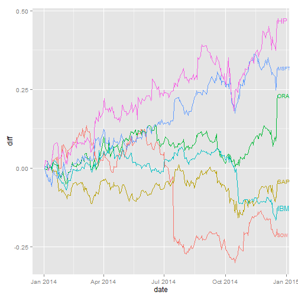

frank's slidify app motivation
a shiny app to analyse stock trends
geekbert
Agenda
- Introduction
- Results
- Use cases
- Outlook
1. Introduction
2. Results

3 Further use cases
Further use cases:
- generic trend analyses: % change over time, compared to peers
- Correlation Analysis: % change over time, including non-peers
- Forecast Functionality
4 Outlook
Outlook:
- this kind of application is useful for a wide variety of use cases
- any person making decisions based on analysis would be well advised to have
this as part of their skills repertoire
- End of Story (EOS)